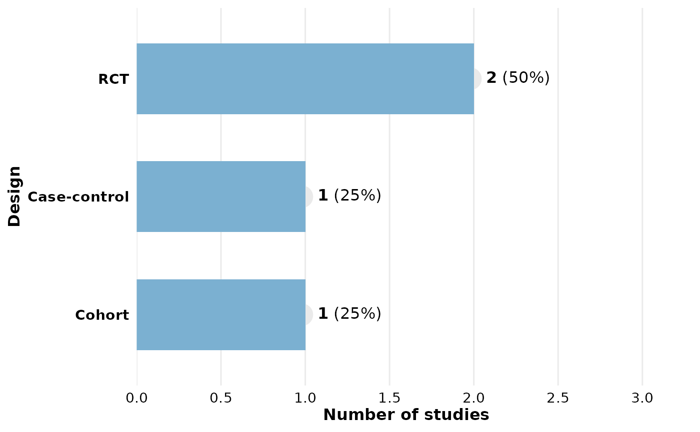
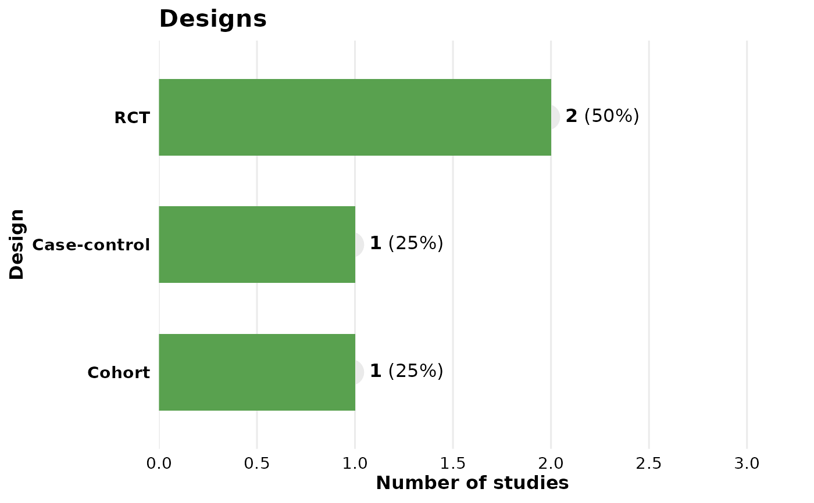

Summarizes a column from literature review data and produces a horizontal
bar chart with frequency and percentage labels. Returns a standard
ggplot2::ggplot object that can be customized with +.
Usage
reviewBar(
data,
col,
fill = "#7BB0D1",
width = 0.6,
sep = "\r\n",
studlabs = FALSE,
study_id = StudyID,
label_space = 1.6,
base_size = 12,
na.rm = TRUE,
na_label = "Not reported",
na_in_percent = TRUE,
na_last = FALSE
)Arguments
- data
A data frame with at least a study ID column and the column named by
col.- col
Column to visualize (quoted or unquoted).
- fill
Character. Bar fill color. Defaults to
"#7BB0D1".- width
Numeric. Bar width (0–1). Defaults to
0.5.- sep
Character. Separator for multi-value cells. Defaults to
"\r\n".- studlabs
Logical. If
TRUE, draws study ID labels on bars usingggfittext::geom_bar_text(). Defaults toFALSE.- study_id
Column containing study identifiers (quoted or unquoted). Defaults to
StudyID.- label_space
Numeric. Multiplier for x-axis headroom to fit labels. Defaults to
1.6.- base_size
Numeric. Base font size in points; controls proportional scaling of all text and elements. Defaults to
12.- na.rm
Logical. Drop missing values? Defaults to
TRUE.- na_label
Character. Label for missing values when
na.rm = FALSE. Defaults to"Not reported".- na_in_percent
Logical. Include missing rows in the percentage denominator? Defaults to
TRUE.- na_last
Logical. If
TRUE, place the missing-value category last regardless of its frequency. Defaults toFALSE.
Value
A ggplot2::ggplot object.
Examples
df <- data.frame(
StudyID = c("S1", "S2", "S3", "S4"),
Design = c("RCT", "Cohort", "RCT", "Case-control"),
stringsAsFactors = FALSE
)
reviewBar(df, Design)

reviewBar(df, Design, fill = "#59a14f") + ggplot2::labs(title = "Designs")
